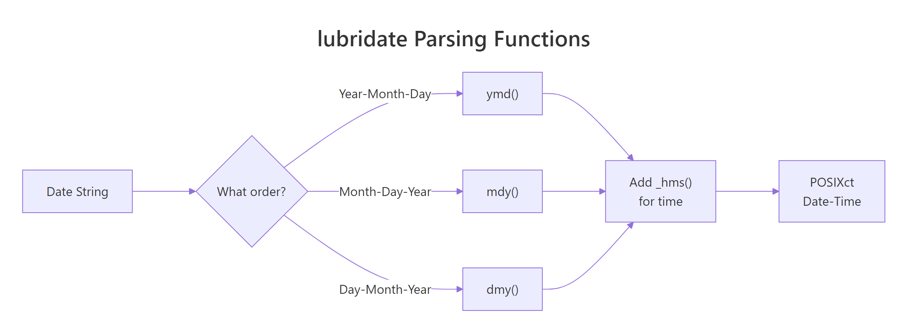
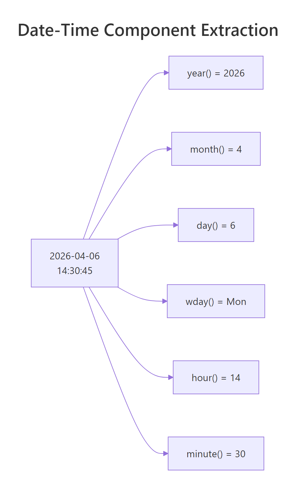
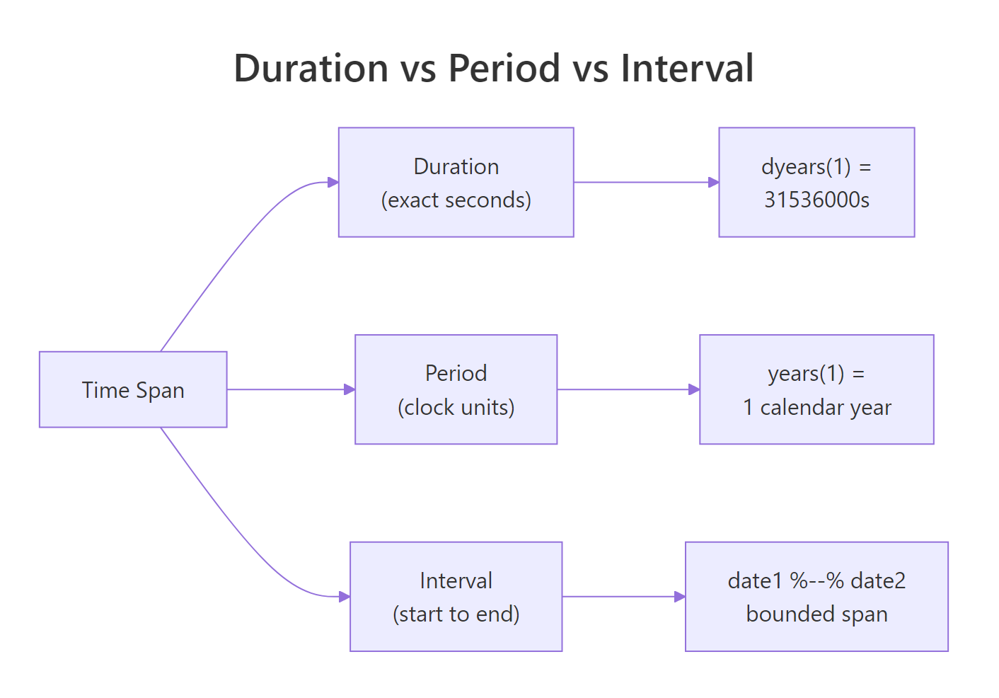

lubridate in R: Parse Dates Once, Stop Fighting Time Zones Forever
lubridate is the tidyverse package for dates and times. It parses any common date format with a single function name, extracts components like month and weekday without string surgery, and handles arithmetic and time zones with rules that actually match the calendar.
Why does R need lubridate for dates?
Base R has as.Date() and as.POSIXct(), but both force you to specify the input format with an obscure %Y-%m-%d string. Get one character wrong and you silently parse nothing. Worse, base R is inconsistent about what "month" returns, how to add a month, and how time zones interact. lubridate replaces all of that with a family of parsers named after the order of their components. Let's start with the payoff — parsing five messy date strings with zero format strings.
Five formats, zero %Y-%m-%d strings. The function name tells lubridate the order of the components and it figures out the separators, month names, and padding automatically. ymd means "year-month-day", dmy means "day-month-year", mdy means "month-day-year". For datetimes, append _h, _hm, or _hms: ymd_hms("2026-04-11 14:30:00").

Figure 1: The lubridate parser family. Pick the function whose name matches the order of components in your input, and lubridate handles the rest.
ymd(c("2026-01-01", "2026-01-02", "bad")) returns a Date vector with NA for the bad element and a warning telling you which one failed.Try it: Parse the vector below with the correct lubridate function.
Click to reveal solution
The components run day-month-year, so dmy() is the right parser. The function name maps directly to the order of the parts in the input.
How does lubridate parse date and datetime strings?
Parser functions fall into three tiers: pure dates (ymd, mdy, dmy, ydm, myd, dym), date-times (ymd_h, ymd_hm, ymd_hms, and all permutations), and specialized parsers (parse_date_time for unusual formats, fast_strptime when performance matters).
When the format is irregular, parse_date_time accepts an orders vector and tries each in order:
This is the rescue function for real-world data where the source export mixes formats. It tries each order and picks the one that gives a valid date per element.
dmy("01/02/2026") parses as Feb 1st; mdy("01/02/2026") parses as Jan 2nd. Always confirm the source convention before choosing a parser. For US data, mdy is the default; for almost everywhere else, dmy.Try it: Parse this mixed vector with parse_date_time using an orders vector.
Click to reveal solution
parse_date_time() tries each order in turn and picks the one that produces a valid result for each element, returning a single uniform POSIXct vector.
How do you extract components like year, month, and weekday?
Once a value is a Date or POSIXct, lubridate gives you an accessor for every meaningful piece. Each accessor has a consistent name and returns the natural type — an integer for numeric parts and an ordered factor for labeled parts.

Figure 2: The component accessors form a hierarchy — year, quarter, month, week, day, hour, minute, second. Each returns a plain integer you can use in dplyr summaries.
The real power comes when you combine these inside a dplyr pipeline. Want average sales by weekday? One mutate and one group_by.
label = TRUE variant of wday, month, and quarter returns an ordered factor, which is what you want for plotting — ggplot will display days in Mon, Tue, Wed order instead of alphabetical.Try it: From the vector below, compute the month and the weekday name for each date.
Click to reveal solution
label = TRUE returns ordered factors instead of integers, which is what you want for plotting and human-readable summaries.
How do you do arithmetic on dates and times?
The obvious question — "how many days between these two dates?" — has a simple answer:
Subtracting two Dates returns a difftime object. Wrap it in as.numeric for a plain number, or cast to as.numeric(..., units = "weeks") if you need different units.
Adding time to a date is where lubridate's design really shines. You do not write "2026-04-11" + 30; you say what kind of unit you are adding.
days, weeks, months, years, hours, minutes, seconds — each returns a period that lubridate adds according to calendar rules. "Three months after January 1st" means April 1st, not "90 days later". That distinction matters for billing cycles, subscriptions, and anything month-aware.
start - months(2). Or use %m-% to handle edge cases at month ends: ymd("2026-03-31") %m-% months(1) returns "2026-02-28" instead of NA.Try it: Compute the date exactly 6 months and 10 days after January 15, 2026.
Click to reveal solution
months() and days() are calendar-aware periods, so the answer respects month boundaries — six months after January 15 is July 15, plus ten days lands on July 25.
What are durations, periods, and intervals and when do you use each?
lubridate distinguishes three things that all feel like "some amount of time" but behave differently. Understanding the difference prevents subtle bugs.

Figure 3: Durations measure exact seconds. Periods respect calendar boundaries. Intervals are a specific start and end pair. Choose based on what "correct" means for your problem.
Duration — an exact number of seconds, regardless of the calendar:
ddays(30) is literally 30 × 86400 seconds. A leap second or DST jump changes the result slightly. Use durations for physics-y questions like "how long was the reactor at full power?".
Period — calendar-aware, variable length:
A period of one month can be 28, 29, 30, or 31 days. Periods are what you want for subscription renewals, legal deadlines, "birthday next year", and anything humans would describe in calendar terms.
Interval — a specific pair (start, end):
Intervals are perfect for "was this transaction in Q1?" or "how long did the experiment actually run?". Divide an interval by a duration or period to get a count.
Try it: Build an interval from Jan 1 to Dec 31 2026. Check whether ymd("2026-07-04") falls inside. Compute the interval's length in weeks.
Click to reveal solution
%within% tests containment and returns a logical; dividing the interval by a duration like dweeks(1) gives the count of weeks it spans.
How do you handle time zones without breaking everything?
Time zones cause more bugs than any other part of date handling. lubridate's rule is simple: every POSIXct value carries one time zone at a time, and you convert with one of two functions.
with_tz(x, tz)— same moment, displayed in a new zone. The underlying instant does not change; only how you render it does.force_tz(x, tz)— same wall clock, reinterpreted as a different zone. The underlying instant shifts.
with_tz is for display — "what time is it in Tokyo right now?". force_tz is for correcting a parse mistake — "this timestamp is actually India time but got labeled UTC on import".
Both times are converted to UTC internally for the subtraction, so the answer is right regardless of DST, offset, or zone. A full list of valid zone strings lives in OlsonNames() — over 600 names, always in Continent/City format.
EST in particular means something different in different operating systems. Use America/Los_Angeles and America/New_York.Try it: Convert a UTC datetime to Tokyo time for display, then to Paris time.
Click to reveal solution
with_tz() keeps the same instant in time and only changes how it is displayed — Tokyo is UTC+9 and Paris is on summer time (CEST, UTC+2) on June 1.
How do you round dates to day, week, or month?
Rounding is the operation hidden inside almost every time-series aggregation. "Sales per week", "users per month", "errors per hour" — all three are a round-then-group. lubridate gives you floor_date, ceiling_date, and round_date.
floor_date snaps down to the unit boundary; ceiling_date snaps up. round_date goes to the nearest. Paired with dplyr, this is the cleanest way to build a weekly sales summary:
week_start = 1 means weeks start on Monday. Change to 7 for Sunday-start weeks (US convention). This single argument prevents endless off-by-one bugs when reports are expected to align with business weeks.
floor_date is idempotent on values already aligned to the unit: flooring a Monday midnight to "week" returns the same Monday midnight. Safe to apply even when your values are already rounded.Try it: Round each datetime in the vector down to the nearest hour.
Click to reveal solution
floor_date() snaps each value down to the nearest hour boundary, dropping the minute and second components in one call.
Practice Exercises
Exercise 1: Parse a messy date column
You get a vector of dates in three different formats. Produce a clean Date vector, with NA for unparseable values.
Solution
Exercise 2: Monthly rollup with names
Given the sales tibble below, compute total revenue per month, with the month name (not number) as the label. Sort chronologically.
Solution
Exercise 3: Subscription expiry
A user signed up on ymd("2026-01-31") for a 1-month subscription that renews on the same day each month. Compute the next 6 renewal dates safely (even at month ends).
Solution
The %m+% operator rolls invalid end-of-month dates down to the last valid day of the target month.
Complete Example
Here is an end-to-end pipeline: parse a messy CSV-like input, extract components, aggregate, and convert time zones for a final report.
Four lubridate calls — ymd_hms, with_tz, wday, hour — replace what would otherwise be a painful stack of as.POSIXct, format, strftime, and manual offset math. Parse once at the boundary, transform freely in the middle, render for humans at the end.
Summary
| Task | Function |
|---|---|
| Parse Y-M-D | ymd() |
| Parse D-M-Y | dmy() |
| Parse M-D-Y | mdy() |
| Parse with time | ymd_hms() / dmy_hms() / mdy_hms() |
| Unusual format | parse_date_time() |
| Extract year/month/day | year() / month() / day() |
| Extract weekday | wday() (use label=TRUE) |
| Extract hour/min/sec | hour() / minute() / second() |
| Add calendar time | + months(n) / + days(n) |
| Add exact seconds | + ddays(n) / + dweeks(n) |
| Month-safe add | %m+% / %m-% |
| Build interval | interval(start, end) |
| Test containment | %within% |
| Convert display tz | with_tz() |
| Fix wrong tz | force_tz() |
| Round to unit | floor_date() / ceiling_date() / round_date() |
Four rules:
- Parse at the boundary. Convert once, work with Date/POSIXct for the rest of the pipeline.
- Periods vs durations. Calendar questions → periods; elapsed-time questions → durations.
- Time zones are metadata.
with_tzchanges display;force_tzchanges meaning. - Use
week_start. Always specify it so "week 15" means the same thing to everyone.
References
- lubridate official reference
- lubridate cheatsheet
- Garrett Grolemund and Hadley Wickham, Dates and Times Made Easy with lubridate, JSS 2011
- R for Data Science, 2e — Dates and Times chapter
- IANA Time Zone Database — canonical list of
Continent/Citynames.
Continue Learning
- stringr in R — often used alongside lubridate to clean messy date strings before parsing.
- dplyr group_by() and summarise() — the natural next step after rounding timestamps.
- pivot_longer() and pivot_wider() — reshape time-series data before or after a date rollup.